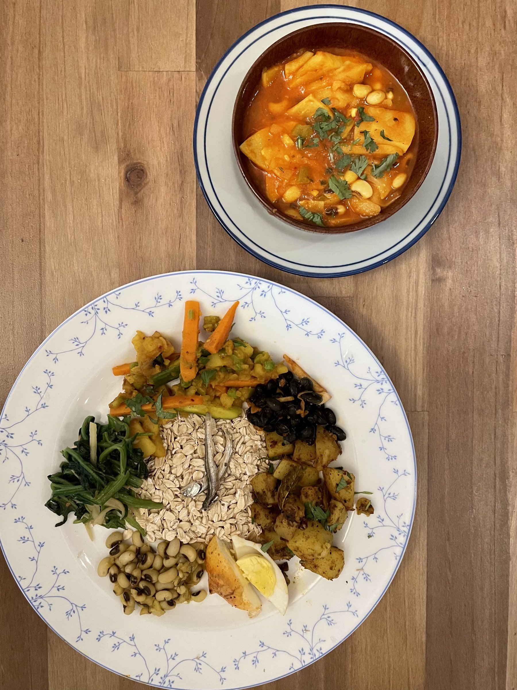

A Shared Dictionary
Food transports us to locations and ages in time. This blog seeks to celebrate recent festivals and holidays based on research, implementation, tasting, and sharing, in that order.

Featured — Gai Jatra 2026
Nepal · Kathmandu Valley
Every August, the streets of the Kathmandu Valley fill with processions and satire for Gai Jatra, the Newar festival that turns a year's grief into shared laughter. Alongside it comes Samay Baji, the ceremonial platter of small dishes offered to a guest or deity first and only then shared around the table, each piece pulling its own symbolic weight rather than just adding flavor.
This version keeps the essentials, toasted chiura, spiced aalu, tangy achar, seasoned bhatmas, and more, while swapping in ingredients that are actually easy to find. It's a lot of small components, but nothing here is difficult, just a little assembly.
Read the full recipe →This blog does not claim authenticity as its forefront — quite the contrary. It's food from a stranger's standpoint. Having lived in many multicultural neighborhoods, I had the realization that there are so many unique holidays that I miss out on from other cultures (with so many good dishes). I want this blog to share the present holidays of many backgrounds, its history, its traditions, and of course, its food. All from a stranger's learnings.
Food has long been just a necessity; people need food, yes, but since the dawn of time food and taste have gone hand in hand. Food doesn't just allow us to live — we live for food.
The fun of cooking is what this blog is for. It might not always turn out perfect, but have fun along the way. Feel free to eyeball, give or take as your heart desires. A grandma cooking approach rather than a chef's.
Get in Touch
Correspondence is always welcome. Whether you have a recipe to share, a story to tell, or simply want to say hello.
✉ annasblogfth@gmail.com